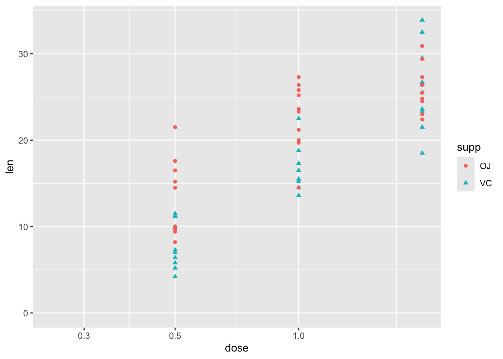
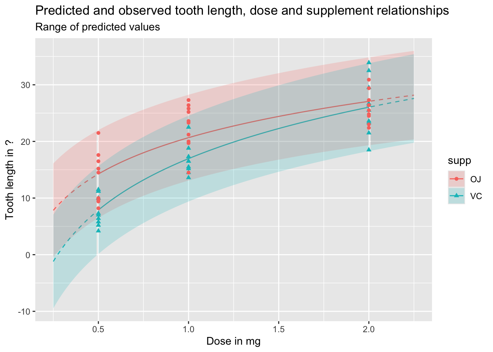
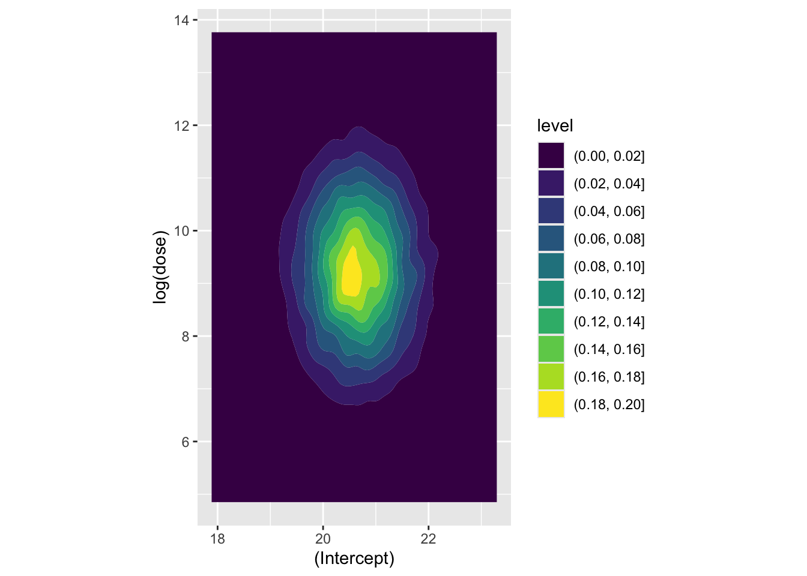
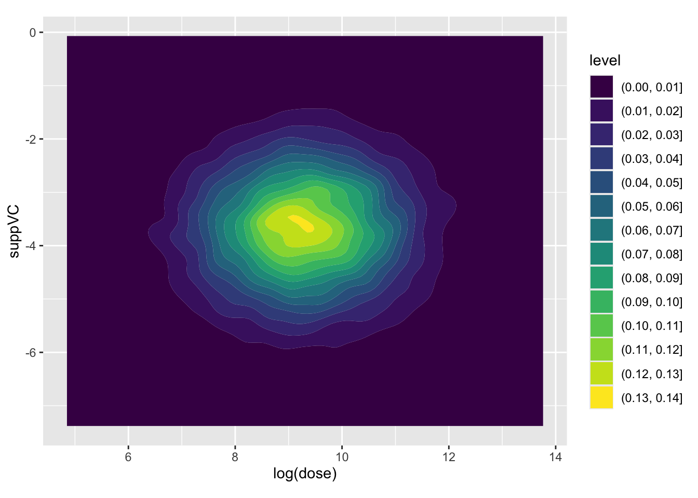
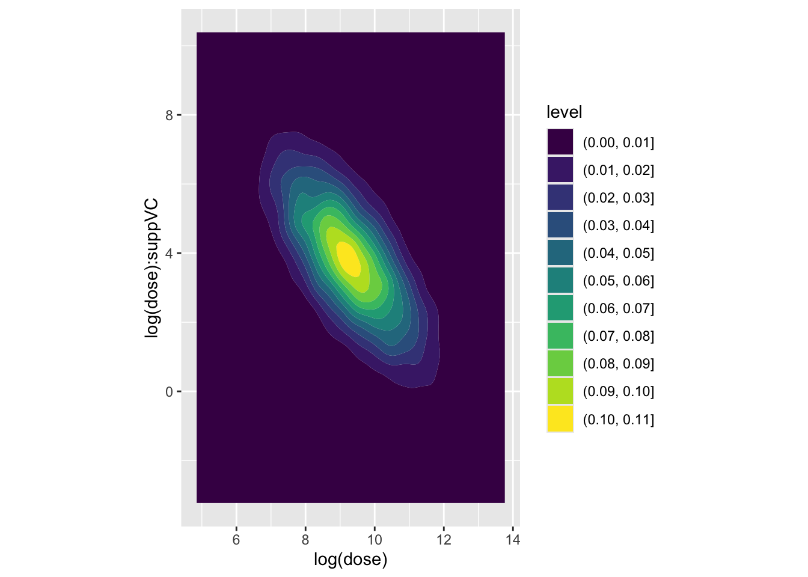

Section One of this course introduced generalised linear models (GLMs) and statistical simuation. Section Two then delved more into the underlying theory and technicalities involved in implementing GLMs and using them for simulation.
This section gives a complete example of the methodology developed in these two sections, from start to finish. It also shows how the methodology is similar enough to Bayesian methods of statistical inference that applying a fully Bayesian modelling framework is just a small hop and jump from where we already are.
Modelling Hamster Tooth Growth
Let’s start with one of the built-in datasets, ToothGrowth, which is described as follows:
The response is the length of odontoblasts (cells responsible for tooth growth) in 60 guinea pigs. Each animal received one of three dose levels of vitamin C (0.5, 1, and 2 mg/day) by one of two delivery methods, orange juice or ascorbic acid (a form of vitamin C and coded as VC).
df |>ggplot(aes(y = len, x = dose, shape = supp, colour = supp)) +geom_point() +expand_limits(x =0, y =0)
So, although this has just three variables, there is some complexity involved in thinking about how the two predictor variables, supp and dose, relate to the response variable len. These include:
Whether the relationship between len and dose is linear in a straightforward sense, or associated in a more complicated wway
Whether supp has the same effect on len regardless of dose, or whether there is an interaction between dose and supp.
Stage One: model fitting
We can address each of these questions in turn, but should probably start with a model which includes both predictors:
Code
mod_01 <-lm(len ~ dose + supp, data = df)summary(mod_01)
Call:
lm(formula = len ~ dose + supp, data = df)
Residuals:
Min 1Q Median 3Q Max
-6.600 -3.700 0.373 2.116 8.800
Coefficients:
Estimate Std. Error t value Pr(>|t|)
(Intercept) 9.2725 1.2824 7.231 1.31e-09 ***
dose 9.7636 0.8768 11.135 6.31e-16 ***
suppVC -3.7000 1.0936 -3.383 0.0013 **
---
Signif. codes: 0 '***' 0.001 '**' 0.01 '*' 0.05 '.' 0.1 ' ' 1
Residual standard error: 4.236 on 57 degrees of freedom
Multiple R-squared: 0.7038, Adjusted R-squared: 0.6934
F-statistic: 67.72 on 2 and 57 DF, p-value: 8.716e-16
Each term is statistically significant at the conventional thresholds (P < 0.05), with higher doses associated with greater lengths. Compared to OJ, the reference category, a vitamin C (VC) supplement is associated with lower lengths.
Turning to the first question, about the type of relationship between len and dose, one possibility is that greater doses lead to greater lengths, but there are diminishing marginal returns: the first mg has the biggest marginal effect, then the second mg has a lower marginal effect. An easy way to model this would be to include the log of dose in the regression model, rather than the dose itself.1 We can get a sense of whether this log dose specification might be preferred by plotting the data with a log scale on the x axis, and seeing if the points look like they ‘line up’ better:
Code
df |>ggplot(aes(y = len, x = dose, shape = supp, colour = supp)) +geom_point() +scale_x_log10() +expand_limits(x =0.250, y =0)

Yes, with this scaling, the points associated with the three dosage regimes look like they line up better. Let’s now build this model specification:
Code
mod_02 <-lm(len ~log(dose) + supp, data = df)summary(mod_02)
Call:
lm(formula = len ~ log(dose) + supp, data = df)
Residuals:
Min 1Q Median 3Q Max
-6.2108 -2.9896 -0.5633 2.2842 9.1892
Coefficients:
Estimate Std. Error t value Pr(>|t|)
(Intercept) 20.6633 0.7033 29.38 < 2e-16 ***
log(dose) 11.1773 0.8788 12.72 < 2e-16 ***
suppVC -3.7000 0.9947 -3.72 0.000457 ***
---
Signif. codes: 0 '***' 0.001 '**' 0.01 '*' 0.05 '.' 0.1 ' ' 1
Residual standard error: 3.852 on 57 degrees of freedom
Multiple R-squared: 0.755, Adjusted R-squared: 0.7464
F-statistic: 87.81 on 2 and 57 DF, p-value: < 2.2e-16
Again, the same kind of relationship between variables is observed: higher log dose: greater length; and VC rather than OJ is associated with lower growth. But is this model actually any better? The model summary for the linear dose model gives an adjusted \(R^2\) of 0.69, whereas for the log dose model the adjusted \(R^2\) is 0.75. So, as the data are fundamentally the same,2 this suggests it is. However, as we know that linear regression models are really just another kind of generalised linear models, and that model fitting tends to involve trying to maximise the log likelihood, we can also compare the log likelihoods of the two models, using the logLik() function, and so which is higher:
Code
logLik(mod_01)
'log Lik.' -170.2078 (df=4)
Code
logLik(mod_02)
'log Lik.' -164.5183 (df=4)
Both report the same number of degrees of freedom (‘df’), which shouldn’t be suprising as they involve the same number of parameters. But the log likelihood for mod_02 is higher, which like the Adjusted R-squared metric suggests a better fit.
Another approach, which generalises better to other types of model, is to compare the AICs, which are metrics that try to show the trade off between model complexity (based on number of parameters), and model fit (based on the log likelihood). By this criterion, the lower the score, the better the model:
Code
AIC(mod_01, mod_02)
df AIC
mod_01 4 348.4155
mod_02 4 337.0367
As both models have exactly the same number of parameters, it should be of no surprise that mod_02 is still preferred.
Let’s now address the second question: is there an interaction between dose and supp. This interaction term can be specified in one of two ways:
Code
# add interaction term explicitly, using the : symbolmod_03a <-lm(len ~log(dose) + supp +log(dose) : supp, data = df)# add interaction term implicitly, using the * symbol mod_03b <-lm(len ~log(dose) * supp, data = df)summary(mod_03a)
Call:
lm(formula = len ~ log(dose) + supp + log(dose):supp, data = df)
Residuals:
Min 1Q Median 3Q Max
-7.5433 -2.4921 -0.5033 2.7117 7.8567
Coefficients:
Estimate Std. Error t value Pr(>|t|)
(Intercept) 20.6633 0.6791 30.425 < 2e-16 ***
log(dose) 9.2549 1.2000 7.712 2.3e-10 ***
suppVC -3.7000 0.9605 -3.852 0.000303 ***
log(dose):suppVC 3.8448 1.6971 2.266 0.027366 *
---
Signif. codes: 0 '***' 0.001 '**' 0.01 '*' 0.05 '.' 0.1 ' ' 1
Residual standard error: 3.72 on 56 degrees of freedom
Multiple R-squared: 0.7755, Adjusted R-squared: 0.7635
F-statistic: 64.5 on 3 and 56 DF, p-value: < 2.2e-16
Code
summary(mod_03b)
Call:
lm(formula = len ~ log(dose) * supp, data = df)
Residuals:
Min 1Q Median 3Q Max
-7.5433 -2.4921 -0.5033 2.7117 7.8567
Coefficients:
Estimate Std. Error t value Pr(>|t|)
(Intercept) 20.6633 0.6791 30.425 < 2e-16 ***
log(dose) 9.2549 1.2000 7.712 2.3e-10 ***
suppVC -3.7000 0.9605 -3.852 0.000303 ***
log(dose):suppVC 3.8448 1.6971 2.266 0.027366 *
---
Signif. codes: 0 '***' 0.001 '**' 0.01 '*' 0.05 '.' 0.1 ' ' 1
Residual standard error: 3.72 on 56 degrees of freedom
Multiple R-squared: 0.7755, Adjusted R-squared: 0.7635
F-statistic: 64.5 on 3 and 56 DF, p-value: < 2.2e-16
We can see from the summaries that both ways of specifying the models lead to exactly the same model, with exactly the same estimates, standared errors, adjusted \(R^2\)s, and so on. The adjusted \(R^2\) is now 0.76, a slight improvement on the 0.75 value for the model without the interaction term. As before, we can also compare the trade-off between additional complexity and improved fit using AIC
Code
AIC(mod_02, mod_03a)
df AIC
mod_02 4 337.0367
mod_03a 5 333.7750
So, the AIC of the more complex model is lower, suggesting a better model, but the additional improvement in fit is small.
We can also compare the fit, and answer the question of whether the two models can be compared, in a couple of other ways. Firstly, we can use BIC, AIC’s (usually) stricter cousin, which tends to penalise model complexity more harshly:
Code
BIC(mod_02, mod_03a)
df BIC
mod_02 4 345.4140
mod_03a 5 344.2467
Even using BIC, the more complex model is still preferred, though the difference in values is now much smaller.
The other way we can compare the models is using an F-test using the anova (analysis of variance) function:
Code
anova(mod_02, mod_03a)
Analysis of Variance Table
Model 1: len ~ log(dose) + supp
Model 2: len ~ log(dose) + supp + log(dose):supp
Res.Df RSS Df Sum of Sq F Pr(>F)
1 57 845.91
2 56 774.89 1 71.022 5.1327 0.02737 *
---
Signif. codes: 0 '***' 0.001 '**' 0.01 '*' 0.05 '.' 0.1 ' ' 1
Here anova compares the two models, notes that the first model can be understood as a restricted variant of the second model,3 and compares the change in model fit between the two models against the change in number of parameters used to fit the model. The key parts of the summary to look at are the F test value, 5.13, and the associated P value, which is between 0.01 and 0.05. This, again, suggests the interaction term is worth keeping.
So, after all that, we finally have a fitted model. Let’s look now at making some predictions from it.
Stage Two: Model predictions
The simplest approach to getting model predictions is to use the predict function, passing it a dataframe of values for which we want predictions:
We can visualise these predictions as follows, with the predicted values as lines, and the observed values as points:
Code
preds_predictors_df |>mutate(interextrap =case_when( dose <0.5~"extrap_below", dose >2.0~"extrap_above",TRUE~"interp" ) ) |>ggplot(aes(x = dose, y = pred_len, colour = supp, linetype = interextrap)) +geom_line() +scale_linetype_manual(values =c(`interp`='solid', `extrap_below`='dashed', `extrap_above`='dashed'), guide ='none') +geom_point(aes(x = dose, y = len, group = supp, colour = supp, shape = supp), inherit.aes =FALSE, data = df ) +labs(x ="Dose in mg",y ="Tooth length in ?",title ="Predicted and observed tooth length, dose and supplement relationships" )
In the above, I’ve shown the lines as solid when they represent interpolations of the data, i.e. are in the range of measured doses, and as dashed when they represent extrapolations from the data, meaning they are are predictions made outside the range of observed values. We can see an obvious issue when we extrapolate too far to the left: for low doses, and for the VC supplement, the model predicts negative tooth lengths. Extrapolation is dangerous! And gets more dangerous the further we extrapolate from available observations.
We can also use the predict function to produce uncertainty intervals, either of expected values, or predicted values. By default these are 95% intervals, meaning they are expected to contain 95% of the range of expected or predicted values from the model.
Let’s first look at expected values, which include uncertainty about parameter estimates, but not observed variation in outcomes:
Code
df_pred_intvl <-predict(mod_03a, newdata = predictor_df, interval ="confidence")preds_predictors_intervals_df <-bind_cols(predictor_df, df_pred_intvl)preds_predictors_intervals_df |>mutate(interextrap =case_when( dose <0.5~"extrap_below", dose >2.0~"extrap_above",TRUE~"interp" ) ) |>ggplot(aes(x = dose, linetype = interextrap)) +geom_line(aes(y = fit, colour = supp)) +geom_ribbon(aes(ymin = lwr, ymax = upr, fill = supp), alpha =0.2) +scale_linetype_manual(values =c(`interp`='solid', `extrap_below`='dashed', `extrap_above`='dashed'), guide ='none') +geom_point(aes(x = dose, y = len, group = supp, colour = supp, shape = supp), inherit.aes =FALSE, data = df ) +labs(x ="Dose in mg",y ="Tooth length in ?",title ="Predicted and observed tooth length, dose and supplement relationships",subtitle ="Range of expected values" )
And the following shows the equivalent prediction intervals, which also incorporate known variance, as well as parameter uncertainty:
Code
df_pred_intvl <-predict(mod_03a, newdata = predictor_df, interval ="prediction")preds_predictors_intervals_df <-bind_cols(predictor_df, df_pred_intvl)preds_predictors_intervals_df |>mutate(interextrap =case_when( dose <0.5~"extrap_below", dose >2.0~"extrap_above",TRUE~"interp" ) ) |>ggplot(aes(x = dose, linetype = interextrap)) +geom_line(aes(y = fit, colour = supp)) +geom_ribbon(aes(ymin = lwr, ymax = upr, fill = supp), alpha =0.2) +scale_linetype_manual(values =c(`interp`='solid', `extrap_below`='dashed', `extrap_above`='dashed'), guide ='none') +geom_point(aes(x = dose, y = len, group = supp, colour = supp, shape = supp), inherit.aes =FALSE, data = df ) +labs(x ="Dose in mg",y ="Tooth length in ?",title ="Predicted and observed tooth length, dose and supplement relationships",subtitle ="Range of predicted values" )

As should be clear from the above, and discussion of the difference between expected and predicted values in previous posts, predicted values and expected values are very different, and it is important to be aware of the difference between these two quantities of interest. Regardless, we can see once again how dangerous it is to use this particular model specification to extrapolate beyond the range of observations, expecially for lower doses.
A lower level example
We’re now going to use the same hamster tooth growth model we used previously, but do some slightly more complicated things with it, relying a bit less on convenience functions and a bit more on our understanding of some of the fundamentals from Section Two.
Recap of core concepts
Back in Section Two we stated that estimates of the cloud of uncertainty in model parameters, that results from having limited numbers of observations in the data, can be represented as:
Where MVN means multivariate normal, and needs the two quantities \(\dot{\theta}\) and \(\Sigma\) as parameters.
Previously we showed how to extract (estimates of) these two quantities from optim(), where the first quantity, \(\dot{\theta}\), was taken from the converged parameter point estimate slot par, and the second quantity, \(\Sigma\), was derived from the hessian slot.
But we don’t need to use optim() directly in order to recover these quantities. Instead we can get them from the standard model objects produced by either lm() or glm(). Let’s check this out…
With the model developed previously, let’s now look at some convenience functions, other than just summary, that work with lm() and glm() objects, and recover the quantities required from MVN to represent the uncertainty cloud.
Extracting quantities for modelling uncertainty
Firstly, for the point estimates \(\dot{\theta}\), we can use the coefficients() function
Code
## Building our model library(tidyverse)df <- ToothGrowth |>tibble()df
Finally, we can extract the point estimate for stochastic variation in the model, i.e. variation assumed by the model even if parameter uncertainty were minimised, using the sigma function:
Code
sig <-sigma(best_model)sig
[1] 3.719847
We now have three quantities, coef, Sig and sig (note the upper and lower case s in the above). These provide something almost but not exactly equivalent to the contents of par and that derived from hessian when using optim() previously. The section below explains this distinction in more detail.
Back to the weeds (potentially skippable)
Recall the ‘grandmother formulae’, from King, Tomz, and Wittenberg (2000), which the first few posts in this series started with:
Stochastic Component
\[
Y_i \sim f(\theta_i, \alpha)
\]
Systematic Component
\[
\theta_i = g(X_i, \beta)
\]
For standard linear regression this becomes:
Stochastic Component
\[
Y_i \sim Norm(\theta_i, \sigma^2)
\]
Systematic Component
\[
\theta_i =X_i \beta
\]
Our main parameters are \(\theta\), which combined our predictors \(X_i\) and our model parameter estimates \(\beta\). Of these two components we know the data - they are what they are - but are merely estimating our model parameters \(\beta\). So, any estimation uncertainty in this part of the equation results from \(\beta\) alone.
Our ancillary parameter is \(\sigma^2\). This is our estimate of how much fundamental variation there is in how the data (the response variables \(Y\)) is drawn from the stochastic data generating process.
When we used optim() directly, we estimated \(\sigma^2\) along with the other \(\beta\) parameters, via the \(\eta\) parameter eta, defined as \(\sigma^2 = e^{\eta}\) to allow optim() to search over an unbounded real number range. If there are k\(\beta\) parameters, therefore, optim()’s par vector contained k + 1 values, with this last value being the point estimate for the eta parameter. Similarly, the number of rows, columns, and length of diagonal elements in the variance-covariance matrix recoverable through optim’s hessian slot was also k + 1 rather than k, with the last row, last column, and last diagonal element being measures of covariance between \(\eta\) and the \(\beta\) elements, and variance in \(\eta\) itself.
By contrast, the length of coefficients returned by coefficients(best_model) is k, the number of \(\beta\) parameters being estimated, and the dimensions of vcov(best_model) returned are also k by k.
This means there is one fewer piece/type of information about model parameters returned by coefficients(model), vcov(model) and sigma(model) than was potentially recoverable by optim()’s par and hessian parameter slots: namely, uncertainty about the true value of the ancillary parameter \(\sigma^2\). The following table summarises this difference:
Information type
via optim
via lm and glm
Main parameters: point
first k elements of par
coefficients() function
Main parameters: uncertainty
first k rows and columns of hessian
vcov() function
Ancillary parameters: point
k+1th through to last element of par
sigma() function or equivalent for glm()
Ancillary parameters: uncertainty
last columns and rows of hessian (after rows and columns k)
—
So long as capturing uncertainty about the fundamental variability in the stochastic part of the model isn’t critical to our predictions then omission of a measure of uncertainty in the ancillary parameters \(\alpha\) is likely a price worth paying for the additional convenience of being able to use the model objects directly. However we should be aware that, whereas with optim we potentially have both \(\tilde{\beta}\) and \(\tilde{\alpha}\) to represent model uncertainty, when using the three convenience functions coefficients(), vcov() and sigma() we technically ‘only’ have \(\tilde{\beta}\) and \(\dot{\alpha}\) (i.e. point estimates alone for the ancillary parameters).
With the above caveat in mind, let’s now look at using the results of coefficients(), vcov() and sigma() to generate (mostly) honest representations of expected values, predicted values, and first differences
Model predictions
As covered in section two, we can use the mvrnorm function from the MASS package to create \(\tilde{\beta}\), our parameter estimates with uncertainty:
Parameter simulation
Code
beta_tilde <- MASS::mvrnorm(n =10000, mu = coef, Sigma = Sig)head(beta_tilde)
Now let’s look at a couple of coefficients jointly, to see how they’re correlated. Firstly the association between the intercept and the log dosage:
Code
beta_tilde |>as_tibble() |>ggplot(aes(x =`(Intercept)`, y =`log(dose)`)) +geom_density_2d_filled() +coord_equal()

Here the covariance between the two parameters appears very low. Now let’s look at how log dosage and Vitamin C supplement factor are associated:
Code
beta_tilde |>as_tibble() |>ggplot(aes(x =`log(dose)`, y = suppVC)) +geom_density_2d_filled() +coord_equal()

Again, the covariance appears low. Finally, the association between log dose and the interaction term
Code
beta_tilde |>as_tibble() |>ggplot(aes(x =`log(dose)`, y =`log(dose):suppVC`)) +geom_density_2d_filled() +coord_equal()

Here we have a much stronger negative covariance between the two coefficients. Let’s look at the variance-covariance extracted from the model previously to confirm this:
Code
knitr::kable(Sig)
(Intercept)
log(dose)
suppVC
log(dose):suppVC
(Intercept)
0.4612422
0.000000
-0.4612422
0.000000
log(dose)
0.0000000
1.440023
0.0000000
-1.440023
suppVC
-0.4612422
0.000000
0.9224843
0.000000
log(dose):suppVC
0.0000000
-1.440023
0.0000000
2.880045
Here we can see that the covariance between intercept and log dose is effectively zero, as is the covariance between the intercept and the interaction term, and the covariance between the log(dose) and suppVC factor. However, there is a negative covariance between log dose and the interaction term, i.e. what we have plotted above, and also between the intercept and the VC factor. For completeness, let’s look at this last assocation, which we expect to show negative association:
Code
beta_tilde |>as_tibble() |>ggplot(aes(x =`(Intercept)`, y = suppVC)) +geom_density_2d_filled() +coord_equal()
Yes it is! The parameter estimates follow the covariance provided by Sigma, as we would expect.
Expected values
Let’s stay we are initially interested in the expected values for a dosage of 1.25mg, with the OJ (rather than VC) supplement:
Code
# first element is 1 due to interceptpredictor <-c(1, log(1.25), 0, 0) predictions_ev <-apply( beta_tilde, 1, FUN =function(this_beta) predictor %*% this_beta)head(predictions_ev)
So, the 95% interval for the expected value is between 21.31 and 24.14, with a middle (median) estimate of 22.73.4 Let’s check this against estimates from the predict() function:
The expected values using the predict function give a 95% confidence interval of 21.27 to 24.19, with a point estimate of 22.73. These are not identical, as the methods employed are not identical,5 but they are hopefully similar enough to demonstrate they are attempts at getting at the same quantities of interest.
Predicted values
Predicted values also include inherent stochastic variation from the ancillary parameters \(\alpha\), which for linear regression is \(\sigma^2\). We can simply add these only the expected values above to produce predicted values:
Code
n <-length(predictions_ev)shoogliness <-rnorm(n=n, mean =0, sd = sig)predictions_pv <- predictions_ev + shooglinesshead(predictions_pv)
As expected, the interval is now much wider, with a 95% interval from 15.34 to 30.11. The central estimate should in theory, with an infinite number of runs, be the same, however because of random variation it will never be exactly the same to an arbitrary number of decimal places. In this case, the middle estimate is 22.75, not identical to the central estimate from the expected values distribution of 22.72. The number of simulations can always be increased to produce greater precision if needed.
Let’s now compare this with the prediction interval produce by the predict function:
Again, the interval estimates are not exactly the same, but they are very similar.
First differences
It’s in the production of estimates of first differences - this, compared to that, holding all else constant - that the simulation approach shines for producing estimates with credible uncertainty. In our case, let’s say we are interested in asking:
What is the expected effect of using the VC supplement, rather than the OJ supplement, where the dose is 1.25mg?
So, the first difference is from switching from OJ to VC, holding the other factor constant.
We can answer this question by using the same selection of \(\tilde{\beta}\) draws, but passing two different scenarios:
It’s this last distribution which shows our first differences, i.e. our answer, hedged with an appropriate dose of uncertainty, to the specific question shown above. We can get a 95% interval of the first difference as follows:
So, 95% of estimates of the first difference are between -4.85 and -0.81, with the middle of this distribution (on this occasion) being -2.83.
Unlike with the expected values and predicted values, the predict() function does not return first differences with honest uncertainty in this way. What we have above is something new.
Summary
In this subsection we’ve finally combined all the learning we’ve developed over the two previous sectionsto answer three specific ‘what if?’ questions: one on expected values, one on predicted values, and one on first differences. These are what King, Tomz, and Wittenberg (2000) refer to as quantities of interest, and I hope you agree these are more organic and reasonable types of question to ask of data and statistical models than simply looking at coefficients and p-values and reporting which ones are ‘statistically significant’.
Introducing Bayesian Statistics: On marbles and jumping beans
Section Two introduced Bayes’ Rule and the Likelihood axiom. It pointed out that, at heart, Bayes’ Rule is a way of expressing that given this in terms of this given that; and that Likelihood is also a claim about how that given this relates to this given that. More specifically, the claim of Likelihood is:
The likelihood of the model given the data is proportional to the probability of the data given the model.
There are two aspects to the model: firstly its structure; secondly its parameters. The structure includes the type of statistical model - whether it is a standard linear regression, negative binomial regression, logistic regression, Poisson regression model and so on - and also the specific types of columns from the dataset selected as either predictor variables (\(X\)) or response variables (\(Y\)). It is only after both the higher level structure of the model family, and the lower level structure of the data inputs (what’s being regressed on what?) have been decided that the Likelihood theory is used.
And how is Likelihood theory used? Well, it defines a landscape over which an algorithm searches. This landscape has as many dimensions as there are parameters to fit. Where there are just two parameters, \(\beta_0\) and \(\beta_1\) to fit, we can visualise this landscape using something like a contour plot, with \(\beta_0\) as latitude, \(\beta_1\) as longitude, and the likelihood at this position its elevation or depth. Each possible joint value \(\beta = \{\beta_0, \beta_1\}\) which the algorithm might wish to propose leads to a different long-lat coordinate over the surface, and each coordinate has a different elevation or depth. Although we can’t see beyond three dimensions (latitude, longitude, and elevation/depth), mathematics has no problem extending the concept of multidimensional space into far more dimensions than we can see or meaningfully comprehenend. If a model has ten parameters to fit, for example, the likelihood search space really is ten dimensional, and so on.
Noticed I used elevation and depth interchangably in the description above. Well, this is because it really doesn’t matter whether an optimisation algorithm is trying to find the greatest elevation over a surface, or the greatest depth over the surface. The aim of maximum likelihood estimation is to find the configuration of parameters that maximises the likelihood, i.e. finds the top of the surface. However we saw that when passing the likelihood function to optim() we often inverted the function by multiplying it by -1. This is because the optimisation algorithms themselves seek to minimise the objective function they’re passed, not maximise it. By multiplying the likelihood function by -1 we made what we were trying to seek compatible with what the optimisation algorithms seek to do: find the greatest depth over a surface, rather than the highest elevation over the surface.
To make this all a bit less abstract let’s develop the intuition of an algorithm that seeks to minimise a function by way of a(nother) weird little story:
Imagine there is a landscape made out of transparent perspex. It’s not just transparent, it’s invisible to the naked eye. And you want to know where the lowest point of this surface is. All you have to do this is a magical leaking marble. The marble is just like any other marble, except every few moments, at regular intervals (say every tenth of a second), it dribbles out a white dye that you can see. And this dye sticks on and stains the otherwise invisible landscape whose lowest point you wish to find.
Now, you drop the marble somewhere on the surface. You see the first point it hits on the surface - a white blob appears. The second blob appears some distance away from the first blob; and the third blob slightly less far away from the second blob as the second was to the second. After a few seconds, a trail of white spots is visible, the first few of which form something like a straight line, each consecutive point slightly less closer to the previous one. A second or two later, and the rumbling sounds of the marble rolling over the surface cease; the marble has clearly run out of momentum. And as you look at the trail of dots it’s generated, and is still generating, and you see it keeps highlighting the same point on the otherwise invisible surface, again and again.
Previously I used the analogy of a magical robo-chauffer, taking you to the top of a landscape. But the falling marble is probably a closer analogy to how many of optim()’s algorithms actually work. Using gravity and its shape alone, it finds the lowest point on the surface, and with its magical leaking dye, it tells you where this lowest point is.
The marble has now ‘told’ you where the lowest point on the invisible surface is. However you also want to know more about the shape of the depression it’s in. You want to know if it’s a steep depression, or a shallow depression. And you want to know if it’s as steep or shallow in every direction, or if it’s steeper in some ways than the other.
So you now have to do a bit more work. You move your hand to just above the marble, and with your forefinger ‘flick’ it in a particular direction (say east-west): you see it move in the direction you flick it briefly, before rolling back towards (and beyond, and then towards) the depression point. As it does so, it leaks dye onto the surface, revealing a bit more about the landscape’s steepness or shallowness in this dimension. Then you do the same, but along a different dimension (say, north-south). After you’ve done this enough times, you are left with a collection of dyed points on the part of the surface closest to its deepest depression. The spacing and shape of these points tells you something about the nature of the depression and the part of the landscape it’s surrounding.
Notice in this analogy you had to do extra work to get the marble to reveal more information about the surface. By default, the marble tells you the specific location of the depression, but not what the surface is like around this point. Instead, you need to intervene twice: firstly by dropping the marble onto the surface; secondly by flicking it around once it’s reached the lowest point on the surface.
Now, let’s imagine swapping out our magical leaking marble for something even weirder: a magical leaking jumping bean.
The magical jumping bean does two things: it leaks and it jumps. (Okay, it does three things: when it leaks it also sticks to the surface it’s dying). When the bean is first dropped onto the surface, it marks the location it lands on. Then, it jumps up and across in a random direction. After jumping, it drops onto another part of the surface, marks it, and the process starts again. Jumping, sticking, marking; jumping, sticking, marking; jumping, sticking, marking… potentially forever.
Because of the effect of gravity, though the jumping bean jumps in a random direction, after a few jump-stick-mark steps it’s still, like the marble, very likely to move towards the depression. However, unlike the marble, even when it gets towards the lowest point in the depression, it’s not going to just rest there. The magical jumping bean is never at rest. It’s forever jump-stick-marking, jump-stick-marking.
However, once the magical bean has moved towards the depression, though it keeps moving, it’s likely never to move too far from the depression. Instead, it’s likely to bounce around the depression. And as it does so, it drops ever more marks on the surface, which keep showing what the surface looks like around the depression in ever more detail.
So, because of the behaviour of the jumping bean, you only have to act on it once, by choosing where to drop it, rather than twice as with the marble: first choosing where to drop it, then flicking it around once it’s reached the lowest point on the surface.
So what?
In the analogies above, the marble is to frequentist statistics as the jumping bean is to Bayesian statistics. A technical distinction between the marble and the jumping bean is that the marble converges towards a point (meaning it reaches a point of rest on the surface) whereas the jumping bean converges towards a distribution (meaning it never rests).
It’s Bayesian statistics’ 6 property of converging to a distribution rather than a point that makes the converged posterior distribution of parameter estimates Bayesian models produce ideal for the kind of honest prediction so much of this blog series has been focused on.
Let’s now do some Bayesian modelling to compare…
Bayesian modelling: now significantly less terrifying than it used to be
There are a lot of packages and approaches for building Bayesian models. In fact there are whole statistical programming languages - like JAGS, BUGS 7 and Stan - dedicated to precisely describing every assumption the statistician wants to make about how a Bayesian model should be built. For more complicated and bespoke models these are ideal.
However there are also an increasingly large number of Bayesian modelling packages that abstract away some of the assumptions and complexity apparent in the above specialised Bayesian modelling languages, and allow Bayesian versions of the kinds of model we’re already familiar with to be specified using formulae interfaces almost identical to what we’ve already worked with. Let’s look at one of them, rstanarm, which allows us to use stan, a full Bayesian statistical programming language, without quite as much thinking and set-up being required on our part.
Let’s try to use this to build a Bayesian equivalent of the hamster tooth model we worked on in the last couple of posts.
Data Preparation and Frequentist modelling
Let’s start by getting the dataset and building the frequentist version of the model we’re already familiar with:
best_model_frequentist <-lm(len ~log(dose) * supp, data = df)summary(best_model_frequentist)
Call:
lm(formula = len ~ log(dose) * supp, data = df)
Residuals:
Min 1Q Median 3Q Max
-7.5433 -2.4921 -0.5033 2.7117 7.8567
Coefficients:
Estimate Std. Error t value Pr(>|t|)
(Intercept) 20.6633 0.6791 30.425 < 2e-16 ***
log(dose) 9.2549 1.2000 7.712 2.3e-10 ***
suppVC -3.7000 0.9605 -3.852 0.000303 ***
log(dose):suppVC 3.8448 1.6971 2.266 0.027366 *
---
Signif. codes: 0 '***' 0.001 '**' 0.01 '*' 0.05 '.' 0.1 ' ' 1
Residual standard error: 3.72 on 56 degrees of freedom
Multiple R-squared: 0.7755, Adjusted R-squared: 0.7635
F-statistic: 64.5 on 3 and 56 DF, p-value: < 2.2e-16
Building the Bayesian equivalent
Now how would we build a Bayesian equivalent of this? Firstly let’s load (and if necessary install8) rstanarm.
Code
library(rstanarm)
Whereas for the frequentist model we used the function lm(), rstanarm has what looks like a broadly equivalent function stan_lm(). However, as I’ve just discovered, it’s actually more straightforward with stan_glm instead:
Code
best_model_bayesian <-stan_glm(len ~log(dose) * supp, data = df)
Model Info:
function: stan_glm
family: gaussian [identity]
formula: len ~ log(dose) * supp
algorithm: sampling
sample: 4000 (posterior sample size)
priors: see help('prior_summary')
observations: 60
predictors: 4
Estimates:
mean sd 10% 50% 90%
(Intercept) 20.7 0.7 19.8 20.7 21.6
log(dose) 9.2 1.2 7.7 9.2 10.8
suppVC -3.7 1.0 -4.9 -3.7 -2.6
log(dose):suppVC 3.9 1.8 1.6 3.9 6.1
sigma 3.8 0.4 3.3 3.8 4.3
Fit Diagnostics:
mean sd 10% 50% 90%
mean_PPD 18.8 0.7 17.9 18.8 19.7
The mean_ppd is the sample average posterior predictive distribution of the outcome variable (for details see help('summary.stanreg')).
MCMC diagnostics
mcse Rhat n_eff
(Intercept) 0.0 1.0 3921
log(dose) 0.0 1.0 2761
suppVC 0.0 1.0 4014
log(dose):suppVC 0.0 1.0 2782
sigma 0.0 1.0 4003
mean_PPD 0.0 1.0 4098
log-posterior 0.0 1.0 1797
For each parameter, mcse is Monte Carlo standard error, n_eff is a crude measure of effective sample size, and Rhat is the potential scale reduction factor on split chains (at convergence Rhat=1).
Some parts of the summary for the Bayesian model look fairly familiar compared with the frequentist model summary; other bits a lot more exotic. We’ll skip over a detailed discussion of these outputs for now, though it is worth comparing the estimates section of the summary directly above, from the Bayesian approach, with the frequentist model produced earlier.
The frequentist model had point estimates of \(\{20.7, 9.3, -3.7, 3.8\}\). The analogous section of the Bayesian model summary is the mean column of the estimates section. These are reported to fewer decimal places by default - Bayesians are often more mindful of spurious precision - but are also \(\{20.7, 9.3, -3.7, 3.8\}\), so the same to this number of decimal places.
Note also the Bayesian model reports an estimate for an additional parameter, sigma. This should be expected if we followed along with some of the examples using optim() for linear regression: the likelihood function required the ancillary parameters (referred to as \(\alpha\) in the ‘mother model’ which this series started with, and part of the stochastic component \(f(.)\)) be estimated as well as the primary model parameters (referred to as \(\beta\) in the ‘mother model’, and part of the systematic component \(g(.)\)). The Bayesian model’s coefficients (Intercept), log(dose), suppVC and the interaction term log(dose):suppVC are all part of \(\beta\), whereas the sigma parameter is part of \(\alpha\). The Bayesian model has just been more explicit about exactly which parameters it’s estimated from the data.
For the \(\beta\) parameters, the Std. Error column in the Frequentist model summary is broadly comparable with the sd column in the Bayesian model summary. For the \(\beta\) parameters these values are \(\{0.7, 1.2, 1.0, 1.7\}\) in the Frequentist model, and \(\{0.7, 1.2, 1.0, 1.7\}\) in the Bayesian model the summary. i.e. they’re the same to the degree of precision offered in the Bayesian model summary.
But let’s get to the crux of the argument: with Bayesian models honest predictions are easier.
And they are, with the posterior_predict() function, passing what we want to predict on through the newdata argument, much as we did with the predict() function with frequentist models.
Scenario modelling
Let’s recall the scenarios we looked at previously:
predicted and expected values: length when dosage is 1.25mg and supplement is OJ
first difference difference between OJ and VC supplement when dosage is 1.25mg
By default posterior_predict() returns a matrix, which in this case has 4000 rows and just a single column. Let’s do a little work on this and visualise the distribution of estimates it produces:
The darker-shaded parts of the histogram show the 95% uncertainty interval, and the blue vertical line the median estimate. This 95% interval range is 14.95 to 30.04.
Remember we previously estimated both the expected values and the predicted values for this condition. Our 95% range for the expected values were 20.27 to 24.19 (or thereabouts), whereas our 95% range for the predicted values were (by design) wider, at 15.34 to 30.11. The 95% uncertainty interval above is therefore of predicted values, which include fundamental variation due to the ancillary parameters \(\sigma\), rather than expected values, which result from parameter uncertainty alone.
There are a couple of other functions in rstanarm we can look at: predictive_error() and predictive_interval()
First here’s predictive_interval. It is a convenience function that the posterior distribution generated previously, predictions, and returns an uncertainty interval:
Code
predictive_interval( predictions)
5% 95%
1 16.22679 28.92694
We can see by default the intervals returned are from 5% to 95%, i.e. are the 90% intervals rather than the 95% intervals considered previously. We can change the intervals requested with the prob argument:
Code
predictive_interval( predictions, prob =0.95)
2.5% 97.5%
1 14.95077 30.03604
As expected, this requested interval returns an interval closer to (but not identical to) the interval estimated using the quantile function.
Let’s see if we can also use the model directly, specifying newdata directly to predictive_interval:
Yes. This approach works too. The values aren’t identical as, no doubt, a more sophisticated approach is used by predictive_interval to estimate the interval than simply arranging the posterior estimates in order using quantile.
For producing expected values we can use the function posterior_epred:
For comparison, the expected value 95% interval we obtained from the Frequentist model was 21.3 to 24.2 when drawing from the quasi-posterior distribution, and 22.7 to 24.2 when using the predict() function with the interval argument set to "confidence".
Now, finally, let’s see if we can produce first differences: the estimated effect of using VC rather than OJ as a supplement when the dose is 1.25mg
The newdata argument to posterior_predict now has two rows, one for the OJ supplement and the other for the VC supplement scenario. And the predictions matrix returned by posterior_predict now has two columns: one for each scenario (row) in predictors_fd. We can look at the distribution of both of these columns, as well as the rowwise comparisions between columns, which will give our distribution of first differences for the predicted values:
To reiterate, these are predicted values for the two scenarios, not the expected values shown in the first differences section of post 12. This explains why there is greater overlap between the two distributions. Let’s visualise and calculate the first differences in predicted values:
We can see that the average of the distribution is below 0, but as we are looking at predicted values the range of distributions is much higher. Let’s get 95% intervals:
The 95% intervals for first differences in predicted values is from -13.6 to +7.9, with the median estimate at -3.0. As expected, the median is similar to the equivalent value from using expected values (-2.9) but the range is wider.
This time, as the stochastic variation related to the \(\sigma\) term has been removed, the distributions of the expected values are more distinct, with less overlap. Let’s visualise and compare the first differences of the expected values:
We now have a 95% interval for the first difference in expected values of -4.9 to -0.7. By contrast, the equivalent range estimated using the Frequentist model in part 12 was -4.8 to -0.8. So, although they’re not identical, they do seem to be very similar.
Bayesian Statistics Summary
Up until now we’ve been using Frequentist approaches to modelling. However the simulation approach required to produce honest uncertainty depends on ‘tricking’ Frequentist models into producing something like the converged posterior distributions which, in Bayesian modelling approaches, come ‘for free’ from the way in which Bayesian frameworks estimate model parameters.
Although Bayesian models are generally more technically and computationally demanding than Frequentist models, we have shown the folllowing:
That packages like rstanarm abstract away some of the challenges of building Bayesian models from scratch;
That the posterior distributions produced by Bayesian models produce estimates of expected values, predicted values, and first differences - our substantive quantities of interest - that are similar to those produced previously from Frequentist models
That for the estimation of these quantities of interest, the posterior distributions Bayesian models generate make it more straightforward, not less, to produce using Bayesian methods than using Frequentist methods.
Thanks for reading, and congratulations on getting this far through the series.
References
King, Gary, Michael Tomz, and Jason Wittenberg. 2000. “Making the Most of Statistical Analyses: Improving Interpretation and Presentation.”American Journal of Political Science 44: 341355. http://gking.harvard.edu/files/abs/making-abs.shtml.
Footnotes
Or perhaps more accurately Bayesian statistical model estimation rather than Bayesian statistics more generally? Bayes’ Rule can be usefully applied to interpret results derived from frequentist models. But the term Bayesian Modelling generally implies that Bayes’ Rule is used as part of the model parameter estimation process, in which a prior distribution is updated according to some algorithm, and then crucially the posterior distribution produced then forms the prior distribution at the next step in the estimation. The specific algorithm that works as the ‘jumping bean’ is usually something like Hamiltonian Monte Carlo, HMC, and the general simulation framework in which a posterior distribution generated from applying Bayes’ Rule is repeatedly fed back into the Bayes’ Rule equation as the prior distribution is known as Markov Chain Monte Carlo, MCMC.↩︎
Because the simulation approach relies on random numbers, the draws will never be the same unless the same random number seed is using using set.seed(). However with more simulations, using the n parameter from mvrnorm, the distributions of estimates should become ever closer to each other.↩︎
In this example, our more complex model has coefficients fit from the data for the intercept, log(dose), supp and the interaction term log(dose):supp, whereas the less complex model has coefficients fit from the data for the intercept, log(dose), and supp. This means the less complex model can be specified as a restricted version of the more complex model, where the value of the coefficient on the interaction term log(dose):supp is set to be equal to zero, rather than determined from the data. An equivalent way of phrasing and thinking about this is that the two model specifications are nested, with the restricted model nested inside the unrestricted model, which includes the interaction term. It’s this requirement for models to be nested in this way which meant that mod_01 and mod_02 could not be compared using an F-test, as neither model could be described strictly as restricted variants of the other model: they’re siblings, not mothers and daughters. However, both mod_01 and mod_02could be compared against a common ancestor model which only includes the intercept term.↩︎
Or perhaps more accurately Bayesian statistical model estimation rather than Bayesian statistics more generally? Bayes’ Rule can be usefully applied to interpret results derived from frequentist models. But the term Bayesian Modelling generally implies that Bayes’ Rule is used as part of the model parameter estimation process, in which a prior distribution is updated according to some algorithm, and then crucially the posterior distribution produced then forms the prior distribution at the next step in the estimation. The specific algorithm that works as the ‘jumping bean’ is usually something like Hamiltonian Monte Carlo, HMC, and the general simulation framework in which a posterior distribution generated from applying Bayes’ Rule is repeatedly fed back into the Bayes’ Rule equation as the prior distribution is known as Markov Chain Monte Carlo, MCMC.↩︎
Because the simulation approach relies on random numbers, the draws will never be the same unless the same random number seed is using using set.seed(). However with more simulations, using the n parameter from mvrnorm, the distributions of estimates should become ever closer to each other.↩︎
Or perhaps more accurately Bayesian statistical model estimation rather than Bayesian statistics more generally? Bayes’ Rule can be usefully applied to interpret results derived from frequentist models. But the term Bayesian Modelling generally implies that Bayes’ Rule is used as part of the model parameter estimation process, in which a prior distribution is updated according to some algorithm, and then crucially the posterior distribution produced then forms the prior distribution at the next step in the estimation. The specific algorithm that works as the ‘jumping bean’ is usually something like Hamiltonian Monte Carlo, HMC, and the general simulation framework in which a posterior distribution generated from applying Bayes’ Rule is repeatedly fed back into the Bayes’ Rule equation as the prior distribution is known as Markov Chain Monte Carlo, MCMC.↩︎